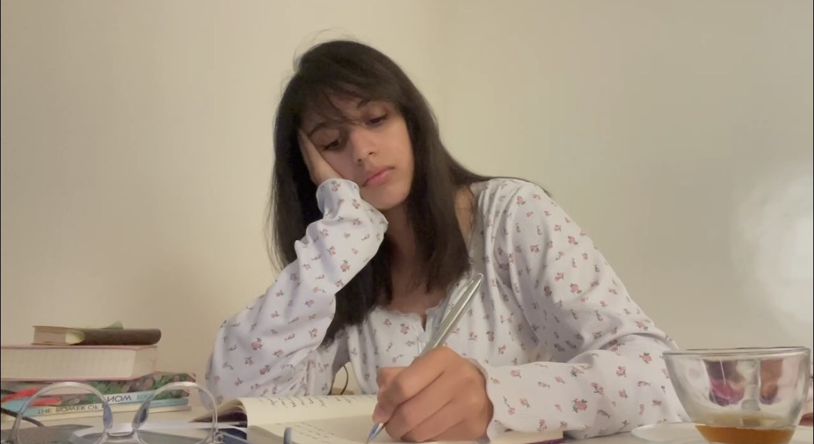

Here again, holding my pen and looking at my paper, waiting for the perfect line to start, looking for the right way to start, to open up. Nothing comes up by waiting.

The moment I stopped waiting, everything changed for me. I knew the reason why I had been stuck in the same place for a long time, just hoping this situation would change. But it never did until I stopped waiting for the perfect word to come up, and the rest would follow. Yes, as easy as this.
And writing is just an example. I've started doing the same thing with everything in life. What I found out is that doing the thing is actually easy, but I complicated it by thinking too much about the right way to do it instead of just doing it.
Starting will show me the next step. Starting will show me what to fix next, what to practice more. Starting will give me data to analyze. Starting will give me experience to use as a reference to come back to. Starting will give me the clear evidence I need. Only starting and actually doing the thing will give me the answers to my questions. Maybe not all of them, but it will certainly light up the road ahead.
That's why the first step is very important. You can study others for years. You can prepare yourself to start. You can spend as much time as you want thinking about how to do it or how people before you got started and succeeded later, so you can do the same to avoid mistakes, to look like a pro, or maybe to achieve your goal in a short amount of time.
But guess what? You're going to make mistakes. You'll feel cringe and embarrassed, but that's totally normal. That's what learning actually is.
I had to accept that I would never feel ready. I had to make peace with the fact that I just had to start now, with whatever I have at this moment, right here, right now.
Thinking will not make the process any easier. Your mind will always give you reasons why you should work on this first, why you should master this before you actually start. And all of it seems reasonable, I'm not gonna lie. But again, you can't improve anything if you haven't taken the first step. What are you going to improve? Your thoughts? They may all be lies; they may be the truth. Who knows?
Only actions will give you a clear picture to look at, specific data to analyze. Only then will you know what to improve, what to work on, what to change, and so on...
It seems easy, but it's not. Your mind will resist because it's unknown. We don't know what's going to happen next, and there are a lot of "what if" questions. What if I fail? What if I look stupid? What if they laugh? What if they judge me? What if it doesn't work out?
And of course, all the negative thoughts that all of us experience before starting something new.
But let's see the other side of it. What if they like what you're doing? What if they encourage you to create more? What if you make someone smile? What if you save someone's life? What if you give hope that good still exists? What if you inspire someone? What if you make someone keep going after they almost gave up? What if you make it? What if you create your dream life? What if it all works out?
Huh? How do you feel now?
It's all about perspective, my friend. The way you look at things makes a huge difference. It's time to rewire your brain and master your mind. Two people can have the same problem. One can be a miserable victim of it, and the other one can use it as a portal to level up.
I'm not a victim. I refuse to be one. So I was face to face with the only option I had: to actually face my fear and walk with it side by side.
Instead of focusing on the output, I decided to focus on the work that should be done, the input, the controllable part. The moment I redirected my attention and all my focus to what I could do best right now and actually did it, everything felt different.
I started enjoying the process, not just obsessing over the final work. And somehow, I felt free. Free from myself, free from my expectations, free from the illusion that I would find the right way to start or the right moment, when there is none.
I learned to do it scared. I learned to start before feeling ready. I learned to push myself into the unknown. I learned that there is no right way to start. There is only my way.
There is no right way. There is only your way.
And I'm sure you know this, but knowing is not enough. Doing is.